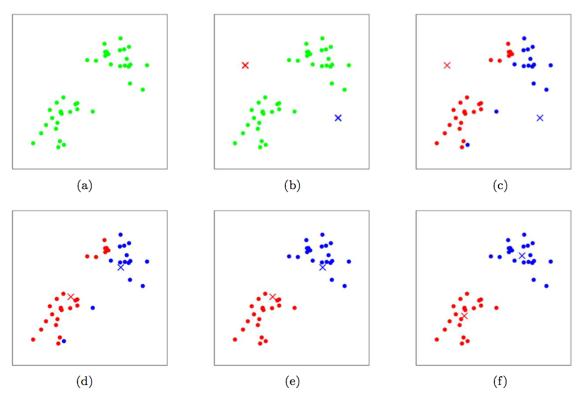

前言
cs229讲义 斯坦福大学的CS229课程是学习机器学习的必备之课，之前是由吴恩达主讲的课程，后来由于不明原因课程被斯坦福大学下架。
note7的主要内容：kmeans算法
重新理解，加油~
kmeans聚类算法
在聚类的问题中，我们得到了一组训练样本集 $\{x^{(1)}, \cdots, x^{(m)}\} $，然后想要把这些样本划分成若干个相关的“类群”。其中的 $x^{(i)}\in\mathbb{R}^{n}$，而并未给出分类标签 $y^{(i)} $。所以这就是一个无监督学习的问题了。
K 均值聚类算法如下所示：
- 1, 随机初始化聚类中心 $μ_{1}, μ_{2},\cdots, μ_{k}\in\mathbb{R}^{n} $。
- 2, 重复下列过程直到收敛:
{- 对每个 $i $，设 $c^{(i)} := arg\mathop{min}\limits_{j}||x^{(i)}-u_{j} ||^{2} $
- 对每个 $j $，设 $u_{j} := \frac{\sum_{i=1}^{m}1\{c^{(i)} = j\}x^{(i)}}{\sum^{m}_{i=1}1\{c^{(i)} = j \}} $
}
在上面的算法中，$k $是我们这个算法的一个参数，也就是我们要分出来的群组个数；而聚类重心 $μ_{j} $表示的是我们对各个聚类的中心位置的当前猜测。在上面算法的第一步当中，需要初始化聚类中心，可以这样实现：随机选择 $k $个训练样本，然后设置聚类中心等于这 $k $ 个样本各自的值。（当然也还有其他的初始化方法。）
算法的第二步当中，循环体内重复执行两个步骤：
- （i）将每个训练样本 $x^{(i)} $“分配”给距离最近的聚类重心 $μ_{j} $；
- （ii）把每个聚类重心 $μ_{j} $ 移动到所分配的样本点的均值位置。下面的 图1 就展示了运行 k均值聚类算法的过程。

图1：$k $均值聚类算法。图中的圆形点表示的是训练样本，交叉符号表示的是聚类重心。
- (a) 原始训练样本数据集。
- (b) 随机初始化的聚类重心（这里的初始化方法就跟我们上面说的不一样，并没有从训练样本中选择两个点）。
- (c-f) 运行 $k $均值聚类算法中的两步迭代的示意图。在每一次迭代中，我们把每个训练样本分配给距其最近的聚类重心（用同样颜色标识出），然后把聚类重心移动到所分配的样本的均值位置。（用颜色区分效果最好了。）
$k $均值聚类算法能保证收敛性么？可以的，至少在一定意义上能这么说。尤其是我们可以定义一个下面这样的函数作为失真函数：
这样就可以用 $J $来衡量每个样本 $x^{(i)} $和对应的聚类重心 $μ_{c^{(i)}} $之间距离的平方和，明显能看出 $k $均值聚类算法正好就是对 $J $的坐标下降过程。尤其是内部的循环体中，$k $均值聚类算法重复对 $J $进行最小化，当 $u $固定的时候用 $c $来最小化 $J $，当 $c $固定的时候则用 $u $ 最小化 $J $。这样就保证了 $J $是单调降低的，它的值也就必然收敛。（通常这也表明了 $c $和 $u $也收敛。在理论上来讲，$k $均值可能会在几种不同的聚类之间摆动，也就是说某些组不同值的 $c $和 $u $对应有完全相同的 $J $值，不过在实践中这种情况几乎不会遇到。）
失真函数 $J $，是一个非凸函数，所以对 $J $进行坐标下降并不一定能够收敛到全局最小值，也就是说，$k $均值聚类算法可能只是局部最优的。通常除了这个问题之外，$k $均值聚类效果都不错，能给出很好的聚类。如果你担心陷入到某些比较差的局部最小值，通常可以多次运行 $k $均值距离（使用不同的随机值进行来对聚类重心 $μ_{j} $ 进行初始化）。然后从所有的不同聚类方案中，选择能提供最小失真 $J(c,μ) $ 的。